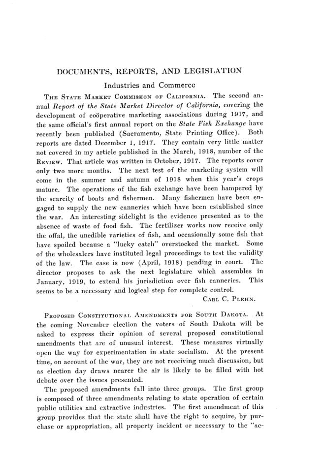

A inflação de guerra, o ouro do Federal Reserve e o preço de revenda
Leitura: 21 min
Kemmerer mede a inflação americana desde 1913; Reed calcula o crédito que o ouro do Federal Reserve sustentaria; Tosdal e Douglas tratam do preço de revenda e da rotatividade da mão de obra.


Suponha que o governo precise de US$ 20 bilhões para as despesas de guerra de um período, calculadas a um dado nível de preços, e que, para levantar esse dinheiro, infle a circulação a ponto de elevar em 25% os preços do que pretende comprar. O empréstimo terá sido um sucesso na subscrição e um fracasso no que importa: o governo terá obtido dólares de oitenta centavos, ou US$ 16 bilhões em poder de compra. O exemplo é de E. W. Kemmerer, da Princeton University, e fecha o artigo que abre o número de junho de 1918 da American Economic Review.
A edição é dominada pela economia da guerra. Kemmerer mede a inflação americana desde 1913; H. L. Reed, da Cornell University, calcula quanto crédito o ouro concentrado no Federal Reserve ainda poderia sustentar; H. R. Tosdal, de Boston, examina se a lei deveria permitir que fabricantes fixem o preço de revenda de seus produtos; Paul H. Douglas, do Reed College, trata da rotatividade da mão de obra; e C. J. Foreman, da University of Arkansas, propõe separar os lucros da eficiência dos ganhos de monopólio. Seguem-se uma nota de Irving Fisher sobre o termo utilidade e três comunicações: Jacob H. Hollander e Edwin R. A. Seligman respondem a Simon N. Patten, e Bruce D. Mudgett responde a H. L. Rietz sobre as reservas das seguradoras. Fecham o número as resenhas, os livros novos, documentos, periódicos, a décima quinta lista de teses de doutorado em andamento e as notas.
Quanto os Estados Unidos inflaram desde o início da guerra?
E. W. Kemmerer (Princeton University) · “Inflation” · pp. 247–269
Kemmerer define inflação como o aumento dos meios circulantes, moeda e depósitos à vista, em relação às necessidades do comércio, a um dado nível de preços. O primeiro passo é medir essas necessidades sem usar preços, que seriam em parte efeito da própria inflação. Ele combina doze séries físicas, da produção de ferro-gusa, carvão, petróleo, cobre e prata às safras de trigo, milho e algodão, aos fretes ferroviários, à tonelagem nos portos e às licenças de construção, com base 100 na média de 1910–1914. O resultado é um crescimento de 21% dos negócios entre 1913 e 1917; incluindo as ações negociadas na Bolsa de Nova York, 26%.
O dinheiro também ficou mais eficiente. A reserva média em caixa dos bancos caiu de 11,7% dos depósitos em 1913 para 10,6% em 1917, o que Kemmerer traduz como um ganho de 9,4% na eficiência do dólar de reserva. A lei do Federal Reserve e a emenda de 21 de junho de 1917 reduziram a reserva legal efetiva dos bancos das cidades centrais de reserva de 25% para 4,55%. Em tempos normais, o ouro que sobrasse sairia do país; o embargo de 7 de setembro de 1917 o represou.
“Quase toda melhoria no sistema monetário e bancário de um país [...] causa inflação.” (“almost any improvement in a country’s currency and banking system ... causes inflation”)
Os salários sindicais por hora subiram 14% entre 1913 e 1917. Entre os males, Kemmerer aponta o peso sobre quem tem renda fixa, o governo que recebe dinheiro barato e pagará em dinheiro mais caro, e o falso otimismo das subscrições bem-sucedidas. Entre os benefícios, o estímulo à indústria e a redução forçada do consumo. Prefere racionamento, restrição do crédito às indústrias não essenciais e mais impostos; a inflação, conclui, só deve ser tolerada como último recurso.
Quanto crédito o ouro do Federal Reserve ainda podia sustentar?
H. L. Reed (Cornell University) · “Credit Expansion under the Federal Reserve” · pp. 270–282
H. L. Reed parte de um êxito: o esforço do Federal Reserve Board para concentrar nos bancos de reserva o ouro do país. Quando o artigo foi escrito, esses bancos detinham mais de US$ 1,1 bilhão em ouro, mais que qualquer outro sistema bancário do mundo. O instrumento foi a nota do Federal Reserve: quando o papel comercial que a lastreava vencia, os bancos de reserva mantinham as notas em circulação depositando ouro junto ao agente do Federal Reserve. Em 29 de junho de 1917, US$ 402 milhões do lastro de US$ 550 milhões em notas eram moeda legal; em boa parte, diz Reed, as notas tinham virado certificados de ouro.
Duas emendas completaram o movimento. A de 7 de setembro de 1916 permitiu aos bancos membros manter nos bancos de reserva parte das reservas que antes ficavam em seus cofres; a de 21 de junho de 1917 tornou obrigatório manter ali toda a reserva legal, de 13%, 10% ou 7% dos depósitos à vista, conforme a categoria do banco, e 3% dos depósitos a prazo. Como os bancos de reserva precisam guardar só 35% em moeda legal contra esses depósitos, US$ 1.000 de crédito de um banco do interior podem repousar sobre US$ 24,50 de moeda.
Com os dados de novembro de 1917, Reed calcula que o excedente de ouro dos bancos de reserva bastaria para uma expansão de mais de 90% dos depósitos dos bancos nacionais, sem contar as reservas excedentes dos próprios bancos membros. A questão é de política: usar o ouro agora ou guardá-lo para o pós-guerra. Para ele, o problema real da guerra é transferir trabalho e materiais das indústrias não essenciais, o que se faz desviando dólares existentes, não criando novos.
“Uma posição de supremacia financeira mundial nos espera, se não formos agora seduzidos por uma política de inflação.” (“a position of world-wide financial supremacy awaits us if we are not now seduced to a policy of inflation”)
O argumento final é internacional. A reserva de ouro do Banco da Inglaterra, de mais de 50% antes da guerra, estaria abaixo de 18%; se a Europa quiser restaurar o padrão-ouro, o ouro americano será disputado.
A lei deve deixar o fabricante fixar o preço de revenda?
H. R. Tosdal (Boston University College of Business Administration) · “Price Maintenance” · pp. 283–305
H. R. Tosdal examina a proposta de legalizar a manutenção de preços de revenda, pela qual o fabricante de um artigo de marca fixaria o preço cobrado pelo varejista. Observa que os argumentos vinham quase sempre dos interessados diretos e que o ônus da prova cabe a quem quer mudar as regras do comércio. A pergunta decisiva é a do consumidor, mas antes ele examina fabricantes, atacadistas e varejistas.
Para o fabricante, o argumento é a proteção do goodwill: o corte de preço desvalorizaria o artigo aos olhos do comprador e afastaria os revendedores. Tosdal procura a evidência e não a encontra. Pelos dados da Bradstreet, faliram 1,17% das empresas em 1915 e 0,92% em 1916, e só 5,7% e 4,2% dessas falências foram atribuídas à concorrência, categoria mais ampla que o corte de preços. A manutenção daria estabilidade a quem já tem marca, mas criaria barreira a novos fabricantes e pouco faria para baixar custos.
Para o pequeno varejista, a fixação parece confortável, mas Tosdal sustenta que não existe concorrência dissociada do preço: com preço e qualidade fixos, a disputa iria para os serviços, e as lojas mais eficientes continuariam em vantagem. Preços uniformes ignoram as diferenças de custo entre distribuidores e locais e impedem a política de menos serviço por menor preço das cadeias de lojas.
“A ideia de que possa haver concorrência dissociada do preço é falaciosa.” (“The idea that there can be competition dissociated from price is fallacious.”)
Para o consumidor, conclui, a marca já garante a qualidade; a fixação não baixaria preços e estimularia a publicidade que só transfere clientes de uma empresa a outra. O projeto daria poder aos fabricantes sem salvaguardas para consumidores e intermediários, e os abusos do corte de preços podem ser tratados pelas leis contra a concorrência desleal.
Por que os trabalhadores trocam tanto de emprego?
Paul H. Douglas (Reed College) · “The Problem of Labor Turnover” · pp. 306–316
Paul H. Douglas começa pelo artesão medieval, que passava a vida no mesmo ofício e na mesma cidade, para mostrar quanto a Revolução Industrial aumentou a mobilidade do trabalho. Seu tema é a mais rápida dessas mobilidades, a troca de emprego, que os estudos recentes passaram a chamar de labor turnover, rotatividade da mão de obra. A medida é a proporção entre os contratados no ano e a força de trabalho a manter: uma fábrica que precisa de mil homens e contrata outros mil no ano tem rotatividade de 100%.
Os levantamentos que ele reúne mostram números altos. W. A. Grieves encontrou em 20 fábricas metalúrgicas do Meio-Oeste 69 mil contratações para manter uma média de 44 mil empregados, 157%; Boyd Fisher, 252% em 57 fábricas de Detroit. Mortes, doenças e acidentes, calcula Douglas, não explicariam mais que 5% ou 6%. O trabalho juvenil gira ainda mais: em Rochester, meninos de 14 a 16 anos trocavam de emprego, em média, a cada dezessete semanas.
O custo vem do trabalho de contratar e demitir, do treinamento, da produção menor do novato, das quebras e acidentes e das máquinas paradas. Grieves estimava pelo menos US$ 40 por homem; Douglas calcula, para o país, entre 100 e 200 milhões de dólares por ano. Entre as causas, lista a contratação em massa e a demissão sumária pelos capatazes, a falta de promoção interna, a sazonalidade, o trabalho juvenil, a monotonia e os salários baixos.
O remédio mais proposto é um departamento de pessoal centralizado, que selecione, acompanhe e promova os empregados. A Dennison reduziu sua rotatividade de 68% para 37%, e a Plimpton Press chegou a 10% ao ano. Douglas acrescenta participação nos lucros, regularização da produção e a elevação da idade mínima de entrada na indústria de 14 para 16 anos.
Como separar o lucro da eficiência do ganho de monopólio?
C. J. Foreman (University of Arkansas) · “Profits of Efficiency” · pp. 317–334
C. J. Foreman propõe um método para separar os rendimentos ganhos pela eficiência dos excedentes não ganhos do mercado, do goodwill e do monopólio. Os lucros da eficiência vêm do esforço técnico do empresário para reduzir custos ou aumentar a quantidade e a qualidade da produção. Ele os divide em dois grupos. Os lucros positivos de utilidade resultam de forças produtivas acrescentadas, como novos processos químicos e físicos; medidos em valor, equivalem à diferença entre o custo unitário do produtor eficiente e o custo na margem.
Os lucros negativos de utilidade vêm da luta contra o risco. Um comerciante de Nova York que, com um sistema automático contra incêndio, reduz seu seguro em quinze mil dólares por ano está somando isso ao lucro. Foreman distingue três formas: riscos internos, como preservar fruta num vagão refrigerado; riscos externos, reduzidos por contratos longos, pela compra de minas de ferro ou pela garantia de mercado; e riscos subjetivos, a ansiedade que diminui quando um processo se firma e libera o empresário para melhorar o negócio.
A evidência mais precisa, para Foreman, está nos tribunais de patentes. Quem usa sem permissão um processo patenteado deve ao inventor a vantagem que obteve sobre o melhor processo anterior. No caso da patente Cawood, a ferrovia que consertou trilhos com uma matriz patenteada teve de pagar a diferença entre esse custo e o de consertá-los numa bigorna comum, ainda que o negócio como um todo desse prejuízo.
“Os frutos dessa vantagem são os seus lucros.” (“The fruits of that advantage are his profits.”)
O plano da concorrência, conclui Foreman, separa o custo de produção, que inclui os lucros da eficiência, do excedente de escassez, que inclui os ganhos de especulação, monopólio e restrição contratual ao comércio. Do lado de cá dessa linha, o Estado ajuda o empresário; do lado de lá, deveria trabalhar para eliminar esses ganhos.
Utilidade é a palavra certa para o que os economistas medem?
Irving Fisher (Yale University) · “Is ‘Utility’ the Most Suitable Term for the Concept it is Used to Denote?” · pp. 335–337
Irving Fisher lista os nomes que o conceito já recebeu: grau final de utilidade em Jevons, utilidade efetiva e utilidade específica em J. B. Clark, utilidade marginal e desejabilidade marginal em Marshall e Gide, Grenznutzen entre os austríacos, valor dos últimos átomos em Gossen, rareté em Walras e ofelimidade em Pareto. Marshall melhorou a expressão de Jevons ao trocar grau final por marginal, e a troca foi aceita. A palavra utilidade, porém, continua.
Para Fisher, o termo é herança de Bentham e confunde o principiante e o público, que não vê por que um sobretudo seria mais útil que um colar, ou um rebolo que uma roleta. A expressão serviços de utilidade pública acrescentou outra confusão: o economista passa a falar da utilidade marginal de uma utilidade pública. Pareto propôs reservar utilidade para o serviço social genuíno e usar ofelimidade na análise dos preços; mas a palavra cunhada, justamente por não ter associações, não conseguiu desalojar a antiga.
Desejabilidade, termo que Fisher usou em quase todos os seus livros, também tem conotação ética: sugere o que deve ser desejado. Sua proposta parte de uma palavra antiga da economia, want, necessidade ou desejo. O que importa para o preço é que o objeto possa ser desejado em certas circunstâncias, seja trivial ou importante, para bons ou maus fins. Daí wantability, algo como desejabilidade sem juízo moral, termo apenas meio cunhado, que avisa o leitor de que precisa aprender seu sentido.
“Em suma, traz o seu significado estampado na face.” (“In short, it bears its meaning on its face.”)
A vantagem adicional seria permitir um nome para a unidade de medida, o wantab. Fisher lembra que tentou criar uma unidade semelhante em sua tese de doutorado de 1891, traduzida para o francês no ano anterior à nota, e diz esperar que os dados da guerra permitam medir estatisticamente a wantability marginal. Antes de lançar os termos, pede a opinião de outros economistas.
O que Hollander disse, afinal, sobre Pigou?
Jacob H. Hollander (Johns Hopkins University) · “‘Mandeville in the Twentieth Century’: A Correction” · pp. 338–339
No número de março de 1918, Simon N. Patten publicara na revista um ensaio intitulado Mandeville in the Twentieth Century, contra o financiamento da guerra por empréstimos. Numa nota de rodapé, citava um trabalho recente de Jacob H. Hollander como exemplo de raciocínio falho. A acusação concreta era outra: Hollander teria tentado desacreditar um adversário ao apresentar como nova a resistência ao financiamento por dívida, que atribuiria a Pigou em 1916, e a trataria como lapso científico e erro perturbador.
A comunicação de Hollander, da Johns Hopkins University, abre com ironia: a entrada de Patten numa controvérsia sempre contribuiria para a alegria das nações. Responde com a frase do mesmo médico e economista do século XVIII que dava título ao ensaio, Bernard Mandeville, segundo a qual a causa mais duvidosa ganha defensores entre os que não conhecem bem a disputa.
O centro da réplica é o confronto de textos. Hollander transcreve o que de fato escreveu. O exemplo de mau uso que criticava era a resistência ao financiamento da guerra por empréstimos com o argumento de que eles levam inevitavelmente à inflação e aos preços altos, o argumento inflacionário contra os empréstimos de guerra. E era esse argumento específico, não a resistência aos empréstimos em geral, cuja primeira formulação explícita ele situava em 1915–1916, num economista inglês de nome, A. C. Pigou.
“Havia profetas, é claro, antes de Saul. Mas não é de profetas que estou falando.” (“There were prophets, of course, before Saul. But it is not of prophets that I am speaking.”)
Para Hollander, Patten cortara a frase ao meio e citara só a primeira metade, de modo a fazê-lo atribuir a Pigou a autoria de toda oposição aos empréstimos de guerra. Se Patten conhecer formulação do argumento inflacionário anterior à de Pigou, diz, convém publicá-la no interesse da história das doutrinas, mas essa não é a questão entre os dois. A comunicação termina pedindo que Patten faça uma correção explícita.
Quem é o Mandeville do século XX?
Edwin R. A. Seligman · “Who is the Twentieth Century Mandeville?” · pp. 339–349
Edwin R. A. Seligman era o alvo principal do ensaio de Patten, que o chamara de Mandeville do século XX. Começa pela cortesia, chamando Patten de velho amigo, e por uma concordância: numa guerra, o primeiro requisito é reduzir o consumo ao menos ao nível da produção. A divergência estaria na teoria do crédito público. Patten queria pagar toda a despesa de guerra com impostos; Seligman defende um lugar substancial para os empréstimos. A analogia, diz, é falsa, porque ele nunca afirmou que o luxo privado fosse benefício público; e, em tom de troco, sugere que o verdadeiro Mandeville seria Patten, para quem o que é bom na vida privada seria vício na pública.
O argumento central é sobre o crédito privado. Patten o reduzia ao crédito bancário de curto prazo; Seligman lembra o crédito ao consumo, das compras a prestação de pianos, máquinas de costura e casas, e o crédito à produção, das debêntures ferroviárias e dos arranha-céus de Nova York financiados em até 80% ou 90% do custo. Os custos objetivos da guerra, armas e suprimentos, têm de ser pagos no presente; mas o crédito alivia os custos subjetivos e, por isso, aumenta a produção. Impostos excessivos, com Scott, de Glasgow, poderiam até forçar os contribuintes a tomar empréstimos para pagá-los.
“O crédito, em outras palavras, aumenta a produção ao reduzir os custos.” (“Credit, in other words, increases production by decreasing costs.”)
Seligman também defende juros baixos nos títulos públicos. Dá três razões: se os preços das mercadorias são controlados, o do capital também pode ser; cada ponto a mais de juros pesa quando a dívida se conta em bilhões e deprecia os demais títulos, pois um título do governo a 5% derruba o preço de uma debênture a 4%; e o capital mais caro restringe seu uso. Na história das doutrinas, sustenta que a hostilidade de Adam Smith e Chalmers aos empréstimos refletia uma economia ainda à vista e a doutrina do fundo de salários. Cita Edgeworth, Scott e Price em favor de um meio-termo entre impostos e empréstimos.
Quem paga a despesa de vender uma apólice nova?
Bruce D. Mudgett (University of Washington) · “‘Methods of Providing for New Business Expenses by Life Insurance Companies’: A Reply” · pp. 349–352
Bruce D. Mudgett responde a H. L. Rietz, que defendera na revista, em dezembro de 1917, o método de valoração de reservas chamado preliminary term. O ponto de partida é a estrutura do prêmio de seguro de vida. Uma apólice vitalícia com participação nos lucros, emitida aos 35 anos por US$ 27 anuais, divide-se, em números redondos, em US$ 21 de prêmio líquido, que cobre a mortalidade com base em médias, e US$ 6 de carregamento, que cobre as despesas. As despesas do primeiro ano, porém, passam muito dos US$ 6.
Os dois autores aceitam o princípio de que cada segurado deve pagar as despesas da própria apólice, enquanto a mortalidade se reparte por médias. O Estado exige que cada prêmio se divida em mortalidade corrente, reserva e carregamento, e que a reserva seja creditada ao segurado. Para pagar as despesas iniciais, as companhias usavam três métodos: o excedente acumulado, possível só para as grandes; o preliminary term modificado; e o select and ultimate, em vigor sob a lei de Nova York.
A pergunta de Mudgett é de onde saem os fundos liberados para pagar o negócio novo: do prêmio líquido ou do carregamento. No select and ultimate, a reserva integral é recomposta com as margens do carregamento nos primeiros cinco anos; no preliminary term, só ao fim dos pagamentos de prêmio, vinte anos no exemplo. O primeiro método obriga a uma prestação de contas rápida das despesas iniciais; o segundo as distribui por médias ao longo da vida da apólice.
Por isso, conclui, o preliminary term viola o princípio aceito pelo próprio Rietz: um método nega o direito à expansão ilimitada com o adiamento do dia de acerto; o outro concede esse privilégio. Numa nota, Mudgett registra que uma variante de Nova Jersey, que exige reservas integrais depois de sete anos, equivale na prática ao select and ultimate.
O que mais há na edição?
As resenhas incluem Railway Rates and the Canadian Railway Commission, de D. A. MacGibbon, e Canadian Provincial Budget Systems and Financial History, de H. G. Villard, ambas por W. W. Swanson; Trade Unionism in the United States, de Robert Franklin Hoxie, por George G. Groat; Monetary System of Mexico, de E. W. Kemmerer, por E. M. Patterson; Income Tax Procedure, 1918, de Robert H. Montgomery, por Carl C. Plehn; Excess Condemnation, de Robert Eugene Cushman, por Richard T. Ely; Statistics, de William B. Bailey e John Cummings, e An Introduction to Statistical Methods, de Horace Secrist, por Edmund E. Day; e Forecasting the Yield and Price of Cotton, de Henry Ludwell Moore, por Warren M. Persons. A seção de documentos começa pelos relatórios da comissão estadual de mercados da Califórnia; a décima quinta lista registra as teses de doutorado em economia em andamento; e as notas abrem com os novos membros da American Economic Association desde 1º de fevereiro de 1918.
Na minha leitura
Na minha leitura, Kemmerer e Reed fazem a mesma conta por lados diferentes. Kemmerer olha para trás e mede quanto a moeda e o crédito cresceram além dos negócios; Reed olha para a frente e calcula quanto crédito o ouro já concentrado ainda permitiria. Os dois chegam à mesma conclusão de método: uma reforma que torna o dinheiro mais eficiente equivale a aumentar sua quantidade, e o efeito sobre os preços depende de onde o excedente pode escoar.
Os demais artigos discutem como os preços se formam quando alguém tenta fixá-los ou explicá-los. Tosdal pergunta se o fabricante sabe melhor que a concorrência qual é o preço certo; Foreman usa a regra dos tribunais de patentes, a vantagem sobre o melhor processo alternativo, como medida do lucro de eficiência; Fisher quer um nome sem juízo moral para o que faz um bem ter preço. A controvérsia entre Seligman e Patten é, no fundo, sobre a distinção entre o custo real da guerra, pago no presente, e a distribuição desse custo entre pessoas e gerações.
Glossário
- Inflação
- na definição de Kemmerer, aumento dos meios circulantes acima das necessidades do comércio, a um dado nível de preços.
- Reserva legal
- proporção dos depósitos que os bancos são obrigados a manter em caixa ou no banco central.
- Nota do Federal Reserve
- papel-moeda emitido pelos bancos de reserva, com lastro mínimo de 40% em ouro.
- Embargo do ouro
- proibição de exportar ouro sem licença, adotada em setembro de 1917.
- Manutenção de preço de revenda
- prática pela qual o fabricante fixa o preço que o varejista cobra do consumidor.
- Goodwill
- preferência dos compradores por uma marca, que lhe dá vantagem sobre concorrentes.
- Rotatividade da mão de obra (labor turnover)
- proporção entre os contratados no ano e a força de trabalho que a empresa precisa manter.
- Lucro de eficiência
- na proposta de Foreman, ganho do produtor que opera abaixo do custo marginal da indústria.
- Ofelimidade
- termo de Pareto para a qualidade que dá preço a um bem, independentemente de ser útil.
- Carregamento
- parte do prêmio de seguro destinada a cobrir as despesas da companhia.
- Preliminary term
- método de reserva que trata o primeiro ano da apólice como seguro temporário, liberando recursos para as despesas iniciais.
Artigos (9)
- Inflation — E. W. Kemmerer (Princeton University) (pp. 247–269) · resenha acima · comentário completo · JSTOR
- Credit Expansion under the Federal Reserve — H. L. Reed (Cornell University) (pp. 270–282) · resenha acima · JSTOR
- Price Maintenance — H. R. Tosdal (Boston University College of Business Administration) (pp. 283–305) · resenha acima · JSTOR
- The Problem of Labor Turnover — Paul H. Douglas (Reed College) (pp. 306–316) · resenha acima · comentário completo · JSTOR
- Profits of Efficiency — C. J. Foreman (University of Arkansas) (pp. 317–334) · resenha acima · JSTOR
- Is “Utility” the Most Suitable Term for the Concept it is Used to Denote? — Irving Fisher (Yale University) (pp. 335–337) · resenha acima · JSTOR
- “Mandeville in the Twentieth Century”: A Correction — Jacob H. Hollander (Johns Hopkins University) (pp. 338–339) · resenha acima · JSTOR
- Who is the Twentieth Century Mandeville? — Edwin R. A. Seligman (pp. 339–349) · resenha acima · JSTOR
- “Methods of Providing for New Business Expenses by Life Insurance Companies”: A Reply — Bruce D. Mudgett (University of Washington) (pp. 349–352) · resenha acima · JSTOR
Resenhas (12)
- Duncan A. MacGibbon, Railway Rates and the Canadian Railway Commission — W. W. Swanson (pp. 361–364). Resenha de W. W. Swanson. JSTOR
- Robert Franklin Hoxie, Trade Unionism in the United States — George G. Groat (pp. 369–372). Resenha de George G. Groat. JSTOR
- Robert G. Paterson, Wage-Payment Legislation in the United States — J. P. Chamberlain (pp. 372–375). Resenha de J. P. Chamberlain. JSTOR
- E. W. Kemmerer, Monetary System of Mexico. Proposed Reforms — E. M. Patterson (pp. 377–378). Resenha de E. M. Patterson. JSTOR
- Robert H. Montgomery, Income Tax Procedure, 1918 — Carl C. Plehn (pp. 380–385). Resenha de Carl C. Plehn. JSTOR
- Robert Eugene Cushman, Excess Condemnation — Richard T. Ely (pp. 385–386). Resenha de Richard T. Ely. JSTOR
- H. G. Villard, Canadian Provincial Budget Systems and Financial History — W. W. Swanson (pp. 386–389). Resenha de W. W. Swanson. JSTOR
- J. W. Jenks e W. J. Lauck, The Immigration Problem (4ª edição) — Prescott F. Hall (pp. 391–392). Resenha de Prescott F. Hall. JSTOR
- Industrial Experiences of Trade-School Girls in Massachusetts (Women’s Educational and Industrial Union) — Lucile Eaves (pp. 392–394). Resenha de Lucile Eaves. JSTOR
- Lewis Meriam, Principles Governing Retirement of Public Employees — Henry J. Harris (pp. 398–400). Resenha de Henry J. Harris. JSTOR
- William B. Bailey e John Cummings, Statistics; Horace Secrist, An Introduction to Statistical Methods — Edmund E. Day (pp. 401–404). Resenha de Edmund E. Day. JSTOR
- Henry Ludwell Moore, Forecasting the Yield and Price of Cotton — Warren M. Persons (pp. 405–406). Resenha de Warren M. Persons. JSTOR
Novos livros (15)
- New Books (pp. 353). Lista de livros recentes da seção de obras gerais, teoria e sua história, com notas breves. JSTOR
- New Books (pp. 353–358). Lista de livros recentes da seção de história econômica e geografia, com notas breves. JSTOR
- New Books (pp. 359–361). Lista de livros recentes da seção de agricultura, mineração, florestas e pesca, com notas breves. JSTOR
- New Books (pp. 364–365). Lista de livros recentes, com notas breves. JSTOR
- New Books (pp. 365). Lista de livros recentes, com notas breves. JSTOR
- New Books (pp. 365–368). Lista de livros recentes da seção de contabilidade, métodos comerciais e investimentos, com notas breves. JSTOR
- New Books (pp. 368–369). Lista de livros recentes da seção de capital e organização capitalista, com notas breves. JSTOR
- New Books (pp. 375–377). Lista de livros recentes, com notas breves. JSTOR
- New Books (pp. 378–380). Lista de livros recentes, com notas breves. JSTOR
- New Books (pp. 389–391). Lista de livros recentes, com notas breves. JSTOR
- New Books (pp. 394–398). Lista de livros recentes, com notas breves. JSTOR
- New Books (pp. 400). Lista de livros recentes, com notas breves. JSTOR
- New Books (pp. 400–401). Lista de livros recentes, com notas breves. JSTOR
- New Books (pp. 401). Lista de livros recentes, com notas breves. JSTOR
- New Books (pp. 406). Lista de livros recentes, com notas breves. JSTOR
Documentos, periódicos e notas (4)
- Documents, Reports, and Legislation — redação e colaboradores (pp. 407–432). Resumos de documentos oficiais, a começar pelos relatórios da comissão estadual de mercados da Califórnia. JSTOR
- Periodicals — redação e colaboradores (pp. 433–458). Resumos de artigos de periódicos americanos e estrangeiros, por área. JSTOR
- Fifteenth List of Doctoral Dissertations in Political Economy in Progress in American Universities and Colleges — redação (pp. 459–475). Décima quinta lista anual de teses de doutorado em economia em andamento nas universidades americanas. JSTOR
- Notes — redação (pp. 476–484). Notas da associação e do meio acadêmico, a começar pelos novos membros admitidos desde 1º de fevereiro de 1918. JSTOR
Fontes
- Inflation (pp. 247–269). JSTOR · Internet Archive (PDF)
- Credit Expansion under the Federal Reserve (pp. 270–282). JSTOR · Internet Archive (PDF)
- Price Maintenance (pp. 283–305). JSTOR · Internet Archive (PDF)
- The Problem of Labor Turnover (pp. 306–316). JSTOR · Internet Archive (PDF)
- Profits of Efficiency (pp. 317–334). JSTOR · Internet Archive (PDF)
- Is "Utility" the Most Suitable Term for the Concept it is Used to Denote? (pp. 335–337). JSTOR · Internet Archive (PDF)
- "Mandeville in the Twentieth Century": A Correction (pp. 338–339). JSTOR · Internet Archive (PDF)
- Who is the Twentieth Century Mandeville? (pp. 339–349). JSTOR · Internet Archive (PDF)
- "Methods of Providing for New Business Expenses by Life Insurance Companies": A Reply (pp. 349–352). JSTOR · Internet Archive (PDF)
- New Books (pp. 353). JSTOR · Internet Archive (PDF)
- New Books (pp. 353–358). JSTOR · Internet Archive (PDF)
- New Books (pp. 359–361). JSTOR · Internet Archive (PDF)
- [untitled] The American Economic Review, (1918-06-01), pages 361-364 (pp. 361–364). JSTOR · Internet Archive (PDF)
- New Books (pp. 364–365). JSTOR · Internet Archive (PDF)
- New Books (pp. 365). JSTOR · Internet Archive (PDF)
- New Books (pp. 365–368). JSTOR · Internet Archive (PDF)
- New Books (pp. 368–369). JSTOR · Internet Archive (PDF)
- [untitled] The American Economic Review, (1918-06-01), pages 369-372 (pp. 369–372). JSTOR · Internet Archive (PDF)
- [untitled] The American Economic Review, (1918-06-01), pages 372-375 (pp. 372–375). JSTOR · Internet Archive (PDF)
- New Books (pp. 375–377). JSTOR · Internet Archive (PDF)
- [untitled] The American Economic Review, (1918-06-01), pages 377-378 (pp. 377–378). JSTOR · Internet Archive (PDF)
- New Books (pp. 378–380). JSTOR · Internet Archive (PDF)
- [untitled] The American Economic Review, (1918-06-01), pages 380-385 (pp. 380–385). JSTOR · Internet Archive (PDF)
- [untitled] The American Economic Review, (1918-06-01), pages 385-386 (pp. 385–386). JSTOR · Internet Archive (PDF)
- [untitled] The American Economic Review, (1918-06-01), pages 386-389 (pp. 386–389). JSTOR · Internet Archive (PDF)
- New Books (pp. 389–391). JSTOR · Internet Archive (PDF)
- [untitled] The American Economic Review, (1918-06-01), pages 391-392 (pp. 391–392). JSTOR · Internet Archive (PDF)
- [untitled] The American Economic Review, (1918-06-01), pages 392-394 (pp. 392–394). JSTOR · Internet Archive (PDF)
- New Books (pp. 394–398). JSTOR · Internet Archive (PDF)
- [untitled] The American Economic Review, (1918-06-01), pages 398-400 (pp. 398–400). JSTOR · Internet Archive (PDF)
- New Books (pp. 400). JSTOR · Internet Archive (PDF)
- New Books (pp. 400–401). JSTOR · Internet Archive (PDF)
- New Books (pp. 401). JSTOR · Internet Archive (PDF)
- [untitled] The American Economic Review, (1918-06-01), pages 401-404 (pp. 401–404). JSTOR · Internet Archive (PDF)
- [untitled] The American Economic Review, (1918-06-01), pages 405-406 (pp. 405–406). JSTOR · Internet Archive (PDF)
- New Books (pp. 406). JSTOR · Internet Archive (PDF)
- Documents, Reports, and Legislation (pp. 407–432). JSTOR · Internet Archive (PDF)
- Periodicals (pp. 433–458). JSTOR · Internet Archive (PDF)
- Fifteenth List of Doctoral Dissertations in Political Economy in Progress in American Universities and Colleges (pp. 459–475). JSTOR · Internet Archive (PDF)
- Notes (pp. 476–484). JSTOR · Internet Archive (PDF)
- Sumário da edição no JSTOR: The American Economic Review, vol. 8, nº 2.
Documento em domínio público (EUA, publicado antes de 1931), via JSTOR Early Journal Content e Internet Archive. Resumo e comentário do autor deste site, sem afiliação com a American Economic Association. Encontrou um erro? Escreva: a correção é publicada no próprio texto, com data.
← Nº 151 · Filadélfia, 1917: lucros extraordinários, terra e o fim do laissez-faire Nº 153 · O trabalhismo britânico, a liga dos agricultores e a sombra das finanças →